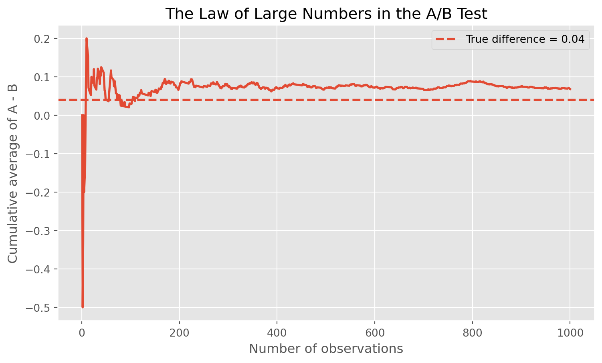
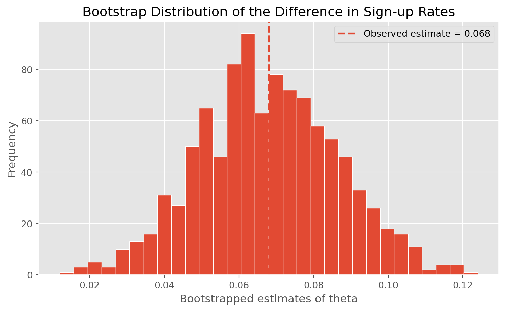
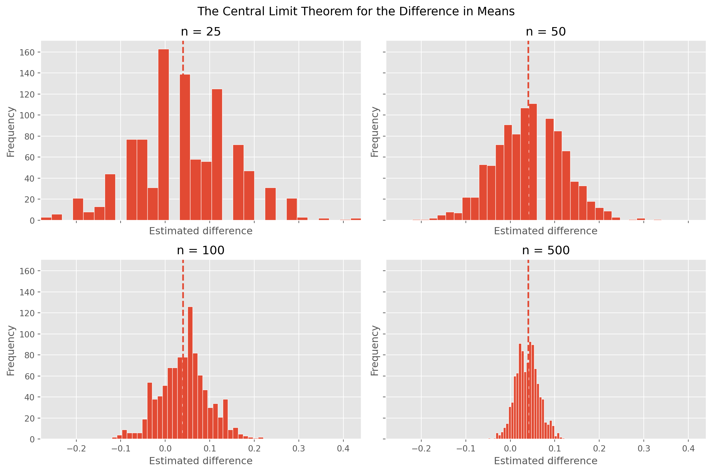

Simulating Key Ideas from Classical Frequentist Statistics
Author
Dongjun Wang
Published
April 15, 2026
Introduction
Imagine I run a website with a landing page where visitors can sign up to receive my newsletter. Since even a small wording change can affect whether someone clicks and subscribes, I want to compare two possible calls to action. In this example, CTA A says “Sign up for our newsletter here!” and CTA B says “Stay up to date by signing up!” The goal is to learn which version generates more sign-ups.
To answer that question, I run an A/B test. In an A/B test, visitors are randomly assigned to one of two versions of a page or message. One group sees CTA A and the other sees CTA B. I then compare the sign-up rates across the two groups. Because the assignment is random, any systematic difference in outcomes can reasonably be attributed to the difference in wording.
The A/B Test as a Statistical Problem
We can express this A/B test using a simple statistical model. Each visitor either signs up or does not sign up, so each outcome is binary. That means it is natural to model each observation as a Bernoulli random variable with parameter (), where () is the probability of signing up.
Let (X_{Ai}) be the outcome for visitor (i) in group A and (X_{Bi}) the outcome for visitor (i) in group B. Each of these variables takes value 1 if the visitor signs up and 0 otherwise. Because the CTA wording may influence behavior, I allow the sign-up probability to differ across the two groups. Visitors who see CTA A have probability (_A) of signing up, while visitors who see CTA B have probability (_B).
The quantity I care about is the difference in sign-up rates between the two CTAs:
\[
\theta = \pi_A - \pi_B
\]
If (> 0), CTA A performs better. If (< 0), CTA B performs better. To estimate this difference from data, I use the difference in sample means:
\[
\hat\theta = \bar{X}_A - \bar{X}_B
\]
Since each observation is either 0 or 1, the sample mean in each group is simply the sample proportion who signed up. So ({X}_A = _A) and ({X}_B = _B), which means the estimator is just the observed difference in conversion rates.
Simulating Data
In a real A/B test, I would not know the true values of (_A) and (_B). I would only observe the sample outcomes and try to infer the underlying sign-up probabilities. For this exercise, though, it is useful to set the true values ourselves so we can study how the estimator behaves when the truth is known.
Suppose the true sign-up probability under CTA A is (_A = 0.22) and the true sign-up probability under CTA B is (_B = 0.18). Then the true treatment effect is
\[
\theta = \pi_A - \pi_B = 0.04
\]
The code below simulates 1,000 Bernoulli draws from each group and stores the results for the later sections.
The Law of Large Numbers says that as the sample size grows, the sample mean converges to the population mean. In this setting, that matters because the sign-up rate in each group is a sample mean. As I observe more visitors, ({X}_A) should get closer to (_A) and ({X}_B) should get closer to (_B). Since my estimator is the difference of these two sample means, the Law of Large Numbers is what gives me confidence that (= {X}_A - {X}_B) will be close to the true () when the sample is large.
To illustrate this, I compute the element-wise differences between the simulated CTA A outcomes and CTA B outcomes, producing a vector of 1,000 values. I then calculate the cumulative average of those differences and plot it against the number of observations.

Running average of the element-wise differences between the CTA A and CTA B outcomes.
At the beginning of the plot, the running average moves around a lot. That makes sense because with only a small number of observations, random variation can have a large effect on the estimate. As more observations are included, the curve becomes much more stable and starts to settle near the true difference of 0.04.
The main lesson is that larger samples lead to more reliable estimates. The early part of the curve is noisy, while the later part is much steadier. This is exactly what the Law of Large Numbers predicts, and it helps explain why large experiments are so valuable in practice.
Bootstrap Standard Errors
Now that I have an estimator for the treatment effect, the next question is how precise that estimate is. A point estimate by itself tells me where my best guess lies, though it does not say how much uncertainty surrounds that guess. To quantify uncertainty, I want a standard error and a confidence interval.
One useful way to estimate the variability of a statistic is the bootstrap. The bootstrap is a resampling method that does not require me to derive a closed-form formula from scratch. Instead, I repeatedly resample with replacement from the data I actually observed, compute the statistic of interest on each resample, and then use the spread of those resampled statistics to estimate the standard error.
Here I draw a bootstrap sample of size 1,000 from the CTA A data and another bootstrap sample of size 1,000 from the CTA B data. For each pair of resamples, I compute
\[
\hat\theta^* = \bar{X}_A^* - \bar{X}_B^*
\]
I repeat this process 1,000 times to generate a bootstrap distribution for the estimator.
It is also helpful to visualize the bootstrap distribution itself.

Bootstrap distribution of the estimated treatment effect.
The bootstrapped standard error and the analytical standard error should be quite close. That is reassuring because they are obtained in different ways. The analytical standard error uses the Bernoulli variance formula, while the bootstrap estimates variability by resampling the observed data. When the two are similar, it suggests that the uncertainty estimate is stable and sensible.
Using the bootstrapped standard error, I construct a 95% confidence interval as ( SE_{}). This interval gives a range of plausible values for the true treatment effect. If the interval lies entirely above zero, it suggests that CTA A has a genuinely higher sign-up rate than CTA B. If the interval includes zero, the data are also consistent with no true difference.
The Central Limit Theorem
The Central Limit Theorem says that regardless of the shape of the underlying population distribution, the sampling distribution of the sample mean becomes approximately Normal as the sample size grows. Since my estimator is a difference in sample means, the same idea applies here. Even though each individual observation is Bernoulli and therefore takes only the values 0 or 1, the distribution of () becomes more bell-shaped when the sample size is large.
To demonstrate this, I consider four different sample sizes: (n {25, 50, 100, 500}). For each sample size, I repeatedly simulate 1,000 A/B tests, compute () each time, and then plot a histogram of those 1,000 estimates.

Sampling distributions of the difference in sample means for four different sample sizes.
The histograms look rougher and more irregular when the sample size is small. That is expected because each estimate is based on limited information, so sampling variation is large. As the sample size increases, the histograms become smoother, more symmetric, and more concentrated around the true difference.
This is the key visual message of the Central Limit Theorem. Even though the underlying outcomes are binary, the estimator itself begins to follow an approximately Normal distribution when the sample is large. That fact is what makes standard confidence intervals and hypothesis tests possible.
Hypothesis Testing
Now that I have seen the Central Limit Theorem in action, I can use it to perform a formal hypothesis test. A hypothesis test starts by stating a null hypothesis and an alternative hypothesis. In this case, the null hypothesis is
\[
H_0: \theta = 0
\]
which says the two CTAs have the same true sign-up rate. The alternative hypothesis is
\[
H_1: \theta \neq 0
\]
which says the two sign-up rates differ.
The next step is to standardize the estimate by dividing it by its standard error:
\[
z = \frac{\hat\theta - 0}{SE(\hat\theta)}
\]
This standardization is important. By the Central Limit Theorem, () is approximately Normally distributed in large samples. Under the null hypothesis, that distribution is centered at zero. When I divide by the standard deviation, the result is approximately standard Normal, so under (H_0) I have (z ;; N(0,1)). Once I know the null distribution of the test statistic, I can compute a p-value.
This procedure is sometimes casually called a t-test, though that label is slightly loose here. The classical t-test arises when the data are drawn from a Normal distribution and the variance is estimated from the sample, which produces an exact t-distribution. In my setting, the data are Bernoulli rather than Normal, so there is no exact t-distribution result. What justifies the test is the Central Limit Theorem, which gives approximate Normality in large samples. Since I also estimate the standard error from the data, the procedure resembles a large-sample z-test. In practice, for large samples the t-distribution and standard Normal distribution are extremely similar, so the distinction has little practical effect, though it is still conceptually important.
The p-value tells me how surprising my estimated difference would be if the true difference were actually zero. A very small p-value provides evidence against the null hypothesis. In this simulated example, the true effect is positive by construction, so I would expect the test to often detect a difference when the sample is large enough. If the p-value is below 0.05, I would reject the null and conclude that the data support a real difference in sign-up rates between the two CTAs.
The T-Test as a Regression
It turns out that the two-sample test I just ran is mathematically equivalent to a simple linear regression. This connection is useful because it shows that regression software can perform the same hypothesis test, and it also points toward more flexible designs with additional controls or treatment groups.
To set this up, I stack the two groups into one dataset. I create an outcome variable (Y_i), which equals 1 if visitor (i) signs up and 0 otherwise, and a treatment indicator (D_i), which equals 1 if the visitor saw CTA A and 0 if the visitor saw CTA B. Then I estimate the regression
\[
Y_i = \beta_0 + \beta_1 D_i + \varepsilon_i
\]
The interpretation is straightforward. When (D_i = 0), the expected value of (Y_i) is (_0), so (_0) estimates the mean outcome in group B, which is (_B). When (D_i = 1), the expected value of (Y_i) is (_0 + _1), so that quantity estimates the mean outcome in group A, which is (_A). Therefore (_1 = _A - _B = ), and the OLS estimate (_1) should be numerically identical to ().
The coefficient estimate from the regression should match the difference in sample means exactly. The test statistics and p-values should also be extremely close. Any slight difference in the standard error comes from the fact that the usual OLS formula often relies on a pooled variance assumption, while the earlier two-sample formula explicitly allowed for separate Bernoulli variances in each group.
This equivalence matters because the regression framework scales naturally. Once the problem is written as a regression, it becomes easy to add control variables, interaction terms, or multiple treatment arms while preserving the same basic logic of statistical inference.
The Problem with Peeking
Suppose my boss is impatient and wants to peek at the results repeatedly before the experiment is finished. Instead of waiting until all 1,000 visitors have been assigned to each group, she wants to test after every 100 visitors per group. That means running 10 hypothesis tests in a single experiment, at (n = 100, 200, 300, , 1000), and stopping early if any one of those tests is significant at the 0.05 level.
This is a problem under classical frequentist statistics because each additional look at the data creates another opportunity for a false positive. A single test at significance level (= 0.05) has a 5 percent chance of incorrectly rejecting the null when the null is actually true. If I test repeatedly on accumulating data, the overall probability of seeing at least one significant result rises above 5 percent. In other words, peeking inflates the Type I error rate.
To show this, I simulate a world in which the null hypothesis is true. I set (_A = _B = 0.20), so there is actually no difference between the two CTAs. In each simulated experiment, I generate 1,000 observations for group A and 1,000 for group B. After every 100 observations per group, I compute the z-statistic and p-value and record whether any of the 10 p-values falls below 0.05. I then repeat the entire experiment 10,000 times.
I can also summarize the peeking rule in plain language. Even when there is truly no difference between CTA A and CTA B, repeated testing makes it much more likely that I will eventually see a “significant” result just by chance. The empirical false positive rate from the simulation is therefore noticeably larger than the nominal 5 percent level attached to a single test.
In practice, this means that stopping rules matter. If analysts want to monitor an experiment over time, they should use methods specifically designed for sequential testing. Otherwise, repeated peeking can make an ordinary A/B test look more convincing than it really is and lead to false discoveries.